Visualization GO#
import plotly.graph_objects as go
import plotly.io as pio
pio.renderers.default = "png"
Line Plot#
fig = go.Figure()
fig.add_trace(go.Scatter(x=[1, 2, 3], y=[3, 2, 6] ))
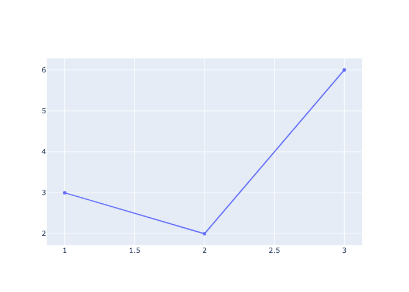
Line Width, Color, Style#
fig = go.Figure()
fig.add_trace(go.Scatter(x=[1, 2, 3], y=[3, 2, 6],line=dict(color='red', width=6, dash='dash')))
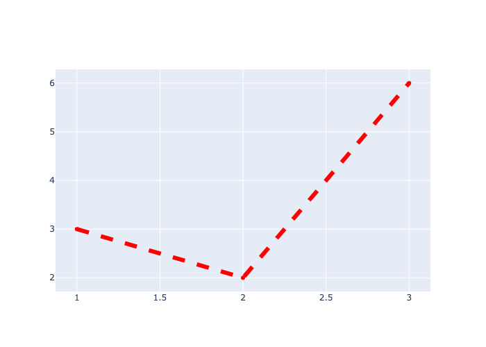
Scatter Plot#
fig = go.Figure()
fig.add_trace(go.Scatter(x=[1, 2, 3, 4, 5, 6], y=[3, 2, 6, 10, 8, 3], mode='markers'))
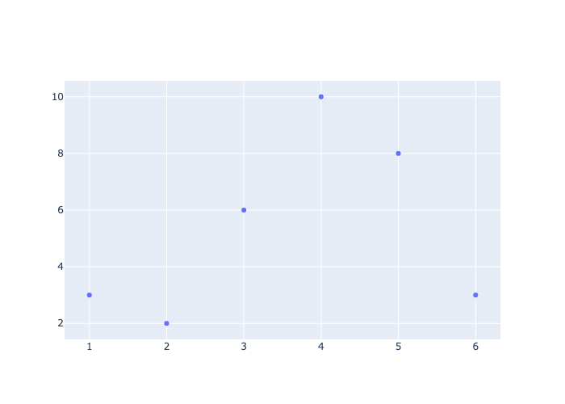
Marker Color and Size#
fig = go.Figure()
fig.add_trace(
go.Scatter(x=[1, 2, 3, 4, 5, 6], y=[3, 2, 6, 10, 8, 3], mode='markers', marker=dict(color='red', size=40))
)
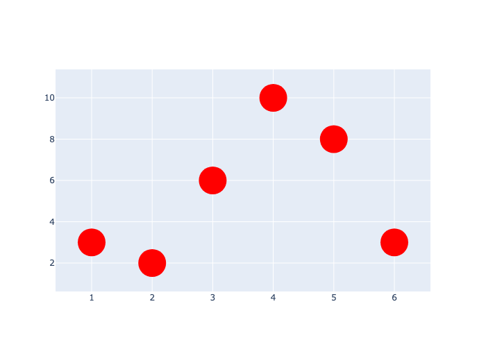
Title#
use update_layout()
fig = go.Figure()
fig.add_trace(go.Scatter(x=[1, 2, 3], y=[3, 2, 6]))
fig.update_layout(title='Three Points')
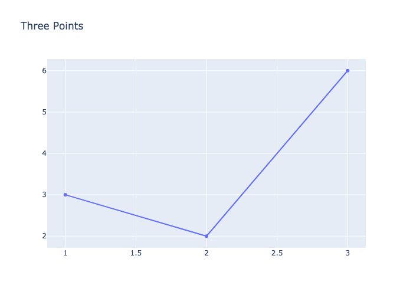
Axis Labels#
use update_layout()
fig = go.Figure()
fig.add_trace(go.Scatter(x=[1, 2, 3], y=[3, 2, 6]))
fig.update_layout(title='Three Points', xaxis_title='X-axis', yaxis_title='Y-axis')
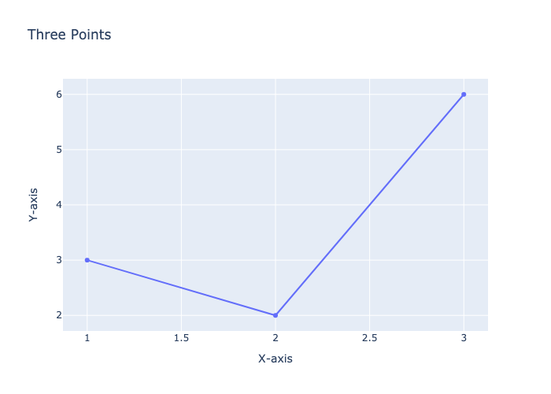
Figure Size#
Use update_layout()
fig = go.Figure()
fig.add_trace(go.Scatter(x=[1, 2, 3], y=[3, 2, 6]))
fig.update_layout(width=400, height=400)
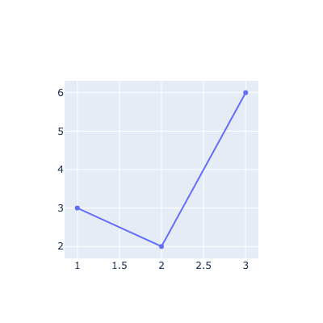
Legend#
fig = go.Figure()
fig.add_trace(go.Scatter(x=[1, 2, 3], y=[3, 2, 6], name='Simple Graph-1'))
fig.add_trace(go.Scatter(x=[1, 2, 3], y=[9, -2, 10], name='Simple Graph-2'))
fig.update_layout(showlegend=True)
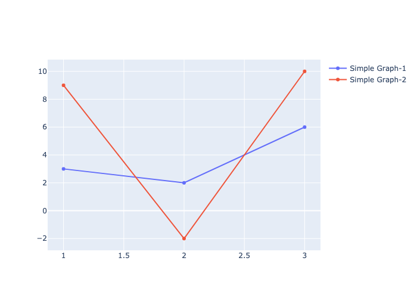
Pie Chart#
sizes = ['small','medium','large']
values = [300, 500, 400]
fig = go.Figure()
fig.add_trace(go.Pie(labels=sizes, values=values))
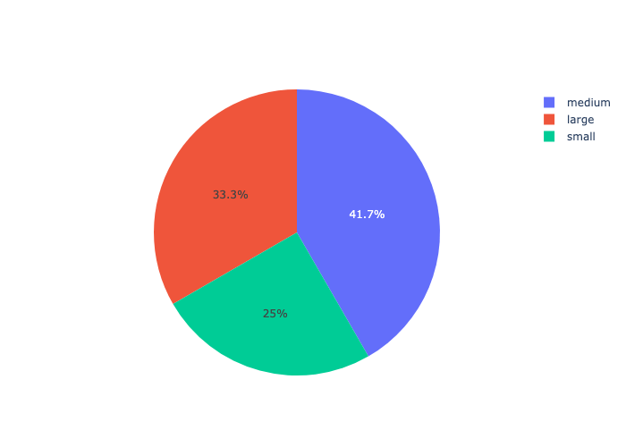
fig = go.Figure(data=[go.Pie(labels=sizes, values=values)])
fig.show()
Candlestick#
import yfinance as yf
df = yf.Ticker('AAPL').history()
df.head()
| Open | High | Low | Close | Volume | Dividends | Stock Splits | |
|---|---|---|---|---|---|---|---|
| Date | |||||||
| 2024-08-12 00:00:00-04:00 | 216.070007 | 219.509995 | 215.600006 | 217.529999 | 38028100 | 0.25 | 0.0 |
| 2024-08-13 00:00:00-04:00 | 219.009995 | 221.889999 | 219.009995 | 221.270004 | 44155300 | 0.00 | 0.0 |
| 2024-08-14 00:00:00-04:00 | 220.570007 | 223.029999 | 219.699997 | 221.720001 | 41960600 | 0.00 | 0.0 |
| 2024-08-15 00:00:00-04:00 | 224.600006 | 225.350006 | 222.759995 | 224.720001 | 46414000 | 0.00 | 0.0 |
| 2024-08-16 00:00:00-04:00 | 223.919998 | 226.830002 | 223.649994 | 226.050003 | 44340200 | 0.00 | 0.0 |
fig = go.Figure()
fig.add_trace(go.Candlestick(x=df.index,open=df.Open,high=df.High,low=df.Low,close=df.Close,name='Apple'))
fig.update_layout(xaxis=dict(title='Candles',rangeslider=dict(visible=False)) ) # remove the second graph
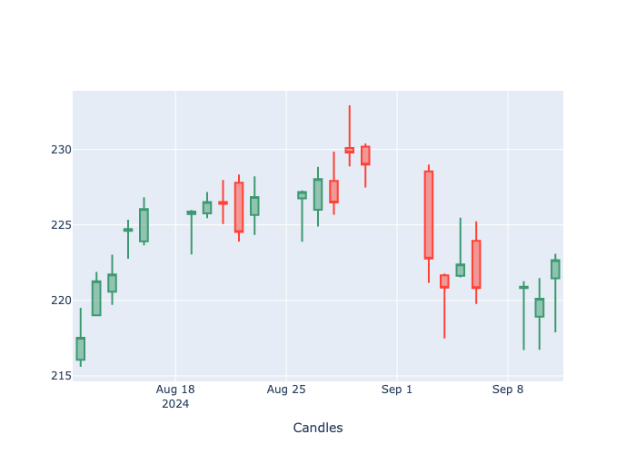
Multiple Axis#
fig = go.Figure()
fig.add_trace(go.Scatter(x=[1,2,3,4,5], y=[1,3,2,5,4], name='same'))
fig.add_trace(go.Scatter(x=[1,2,3,4,5], y=[10,20,30,40,50], name='tens', yaxis='y2'))
fig.update_layout(
yaxis=dict(title='Mulltiple Axis', side='left'),height=500,
yaxis2=dict(overlaying='y',side='right',position=1,showgrid=False))
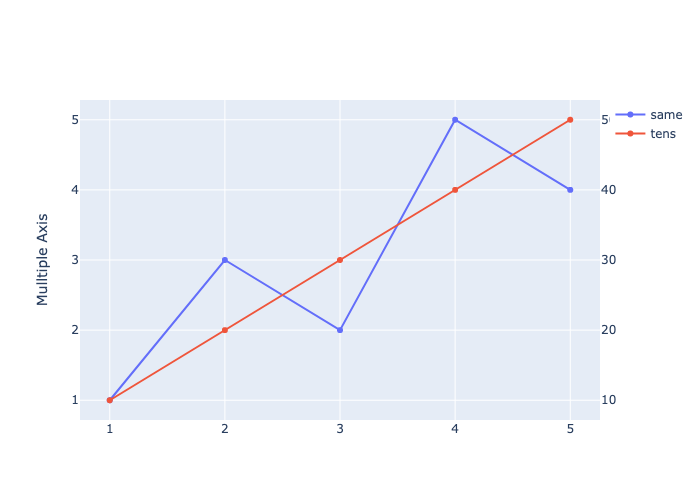
fig = go.Figure()
fig.add_trace(go.Scatter(x=[1,2,3,4,5], y=[1,3,2,5,4]))
fig.add_trace(go.Scatter(x=[1,2,3,4,5], y=[10,20,30,40,50], name='tens'))
fig.add_trace(go.Scatter(x=[1,2,3,4,5], y=[300,500,200,400,100], name='hundreds'))
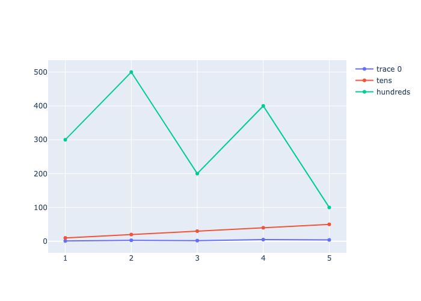
fig = go.Figure()
fig.add_trace(go.Scatter(x=[1,2,3,4,5], y=[1,3,2,5,4], name='ones'))
fig.add_trace(go.Scatter(x=[1,2,3,4,5], y=[10,20,30,40,50], name='tens', yaxis='y2'))
fig.add_trace(go.Scatter(x=[1,2,3,4,5], y=[300,500,200,400,100], name='hundreds', yaxis='y3'))
fig.update_layout(
yaxis=dict(title='Mulltiple Axis', side='left'),height=700,
yaxis2=dict(overlaying='y',side='right',position=1,showgrid=False),
yaxis3=dict(overlaying='y',side='right',position=0.8,showgrid=False))
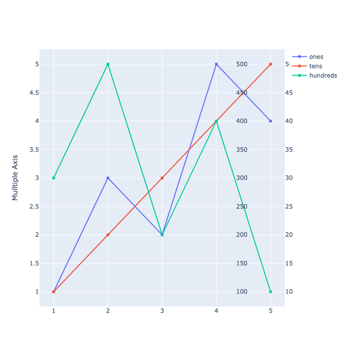
fig = go.Figure()
fig.add_trace(go.Scatter(x=[1,2,3,4,5], y=[1,3,2,5,4], name='ones', line=dict(color='blue')))
fig.add_trace(go.Scatter(x=[1,2,3,4,5], y=[10,20,30,40,50], name='tens', yaxis='y2', line=dict(color='red')))
fig.add_trace(go.Scatter(x=[1,2,3,4,5], y=[300,500,200,400,100], name='hundreds', yaxis='y3', line=dict(color='green')))
fig.update_layout(
yaxis=dict(title='Mulltiple Axis', side='left', color='blue',),height=700,
yaxis2=dict(overlaying='y',side='right',position=1, color='red', showgrid=False),
yaxis3=dict(overlaying='y',side='right',position=0.8, color='green', showgrid=False))
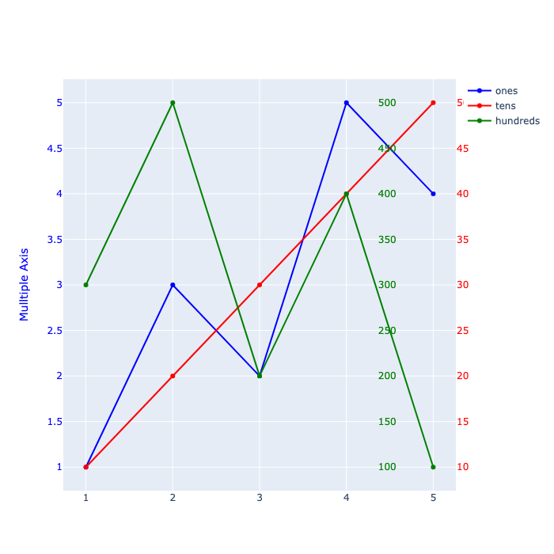